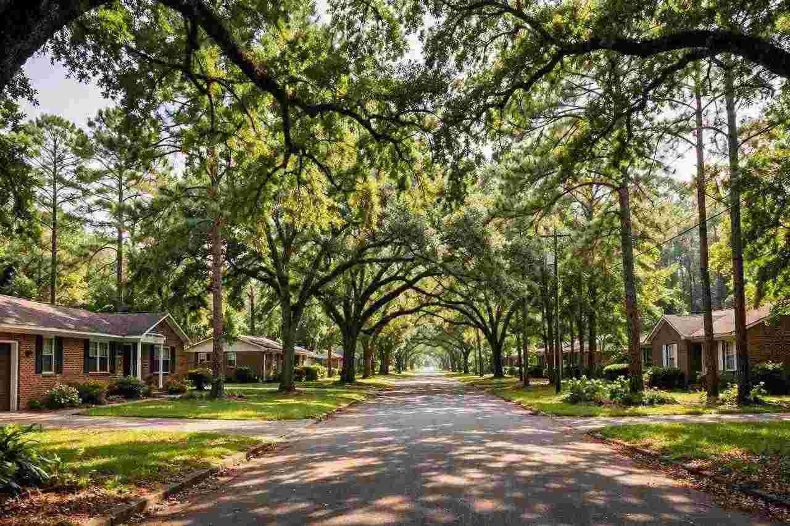

Rodent Control · Attalla, AL
Trusted Rodent Control in Attalla, AL
Murvo delivers same-day rodent control in Attalla for rats and mice in attics, walls, kitchens, and crawl spaces. Local crews start with a thorough inspection, then remove, exclude, and monitor until the problem is solved. You approve one flat-rate price in writing before any work starts, and every job carries a written guarantee across Etowah County. Service covers 1 ZIP codes across Etowah County, including 35954, with same-day appointments where schedules allow.
24/7Availability
1ZIP codes covered
Same-dayResponse
Licensed · Upfront options · Written guarantees · Fully insured
Attalla at a glance
Local Rodent Control for Attalla, AL.
Etowah County
Countynortheast Alabama
RegionBirmingham · 52 mi
Nearest metro113 miles north of Montgomery
From Montgomery1
ZIP codes covered Service by service in Attalla
Rodent Control Services Available in Attalla
Thirty rodent services, one local standard in Attalla: inspection-led, exclusion-first, and quoted in writing before work begins. Browse the full list for Etowah County below - each section explains what the service involves here, what it typically costs nationally, and how fast we can start.
- 01Rodent Control↗
- 02Rodent Inspection↗
- 03Rodent Removal↗
- 04Rodent Exclusion↗
- 05Rodent Proofing↗
- 06Rat Control↗
- 07Mice Control↗
- 08Mouse Removal↗
- 09Rat Removal↗
- 10Rodent Trapping↗
- 11Rodent Baiting↗
- 12Rodenticide Application↗
- 13Attic Rodent Removal↗
- 14Crawl Space Rodent Removal↗
- 15Wall Rodent Removal↗
- 16Kitchen Rodent Control↗
- 17Garage Rodent Control↗
- 18Commercial Rodent Control↗
- 19Residential Rodent Control↗
- 20Emergency Rodent Removal↗
- 21Same-Day Rodent Control↗
- 22Rodent Damage Repair↗
- 23Rodent Waste Cleanup↗
- 24Rodent Disinfection↗
- 25Rodent Odor Removal↗
- 26Dead Rodent Removal↗
- 27Rodent Dropping Cleanup↗
- 28Rodent Exclusion for Roofs↗
- 29Rodent Exclusion for Vents↗
- 30Rodent Exclusion for Chimneys↗
Rodent Control in Attalla
Rodent Control in Attalla
In Attalla, bungalows and ranch homes with crawlspaces, historic homes, and suburban homes under mature tree canopy give rodents warmth, shelter, and easy routes through rooflines and eaves, attic vents, crawlspace doors and vents, and gaps where tree limbs touch the roof, especially once nights turn cold across Etowah County. Our licensed, insured technicians identify the species, map active runways, and build a control plan around your home rather than a generic spray. Every visit is documented with photos, trap records, and clear next steps for your household.
When you need rodent control in Attalla, the job starts with what is actually happening in your part of Etowah County. Murvo crews work Attalla every week, so they know how Roof rat (Rattus rattus) and Norway rat (Rattus norvegicus) behave around bungalows and ranch homes with crawlspaces, historic homes, and suburban homes under mature tree canopy here - and where they get in: rooflines and eaves, attic vents, crawlspace doors and vents, and gaps where tree limbs touch the roof. We arrive equipped for the full job, confirm the flat rate in writing before work begins, and cover the whole Attalla area, including Ivalee, Ridgeville. No call-center runaround and no open-ended hourly billing - just a local crew, a clear plan, and a written quote you approve first. Homes near Ridgeville tend to show activity first in Attalla, which is why inspections start with rooflines and eaves, attic vents, crawlspace doors and vents, and gaps where tree limbs touch the roof.
Our process follows five stages: Inspect, Remove, Exclude, Clean, and Monitor. Contaminated areas are cleaned safely, and monitoring visits confirm activity has stopped before we sign the job off. A technician first checks the attic, crawl space, garage, and kitchen, recording droppings, nests, gnaw marks, and entry gaps with photos. Active animals are cleared with targeted trapping matched to the species, then openings around pipes, vents, and rooflines are sealed with copper mesh, hardware cloth, and metal flashing. You approve every stage in advance, in writing.
Getting started takes one conversation, day or night, because our lines stay open 24/7. We book a window that suits your household, confirm access needs in advance, and arrive prepared. Work proceeds only after your approval, in stages you can follow, and a final walkthrough reviews every seal and every monitoring result before sign-off. Questions after sign-off are welcome at any hour, and the same written record helps any technician pick up your case immediately.
In most of Attalla, we can offer a same-day appointment for rodent control, and our lines are open 24/7 for urgent cases like scratching in the walls or a rodent in a living area. Your technician inspects first, explains the plan, and quotes a flat rate in writing before any work begins, so help starts fast without surprises. In Etowah County, most cases involve the Roof rat (Rattus rattus) and the Norway rat (Rattus norvegicus), so the inspection focuses on their routes first.
Murvo does not quote rodent control sight unseen, because species, activity, and sealing needs change the work involved. After inspection you get one flat-rate written quote, and that is the figure you pay. As national context only, Angi's 2026 figures put rat and mouse removal and control at an average of $396, with a typical range of $189 to $655 — a benchmark, not a Murvo price.
Rodent Inspection in Attalla
Rodent Inspection in Attalla
You do not need to see a rodent to have a rodent problem in Attalla. Droppings in the attic, gnaw marks near rooflines and eaves, attic vents, crawlspace doors and vents, and gaps where tree limbs touch the roof, or noises after dark are enough reason to book a rodent inspection. Murvo technicians check the whole property, photograph what they find, and give you a prioritized plan plus a flat-rate written quote for any work recommended.
In Attalla, rodent inspection is not a generic spray-and-go service. Rodents exploit rooflines and eaves, attic vents, crawlspace doors and vents, and gaps where tree limbs touch the roof in bungalows and ranch homes with crawlspaces, historic homes, and suburban homes under mature tree canopy, and a fix that ignores those routes does not last. Murvo's Attalla team inspects first, shows you the evidence - droppings, gnaw marks, entry gaps - and then lays out the work with a flat-rate written quote. We serve all of Etowah County from Attalla, including Ivalee, Ridgeville, and every job is covered by our written workmanship guarantee. Homes near Ridgeville tend to show activity first in Attalla, which is why inspections start with rooflines and eaves, attic vents, crawlspace doors and vents, and gaps where tree limbs touch the roof.
Timing often tells the story first. Noises at dusk suggest one pattern; droppings near stored food suggest another. Technicians use what you report to focus the search, then verify it against physical evidence throughout bungalows and ranch homes with crawlspaces, historic homes, and suburban homes under mature tree canopy. They check wiring and insulation for damage, test whether gaps at rooflines and eaves, attic vents, crawlspace doors and vents, and gaps where tree limbs touch the roof are active, and mark each opening by size and species. The written report that follows ranks repairs clearly, so decisions rest on findings rather than guesswork or pressure. Each recommendation in that report traces back to a photographed finding, keeping the whole assessment accountable.
After booking, we confirm your time window by text or call. Before leaving, they review photos and priorities with you, leave the written findings, and schedule any follow-up work you approve. On arrival, your background-checked technician checks in, protects floors and access points, and works through a set inspection checklist inside and out. The inspection itself is backed by licensed, insured service and our written workmanship guarantee on quoted work.
You do not have to wait days for answers in Attalla. Same-day rodent inspection appointments are available in most areas, urgent calls are taken 24/7, and most home inspections take under an hour. You finish the visit with photos, written findings, and flat-rate pricing for anything we recommend. That is also why Murvo pairs removal with exclusion in Attalla - treating the animal without closing rooflines and eaves, attic vents, crawlspace doors and vents, and gaps where tree limbs touch the roof rarely lasts.
Nationally, a professional rodent inspection typically runs $100 to $200 according to Angi's 2026 data, and it is often credited toward the job if you proceed. Murvo confirms your exact rodent inspection price before the visit and quotes any follow-up work as a flat rate in writing after inspection, so the figure you approve is the figure you pay, with no hourly billing.
Rodent Removal in Attalla
Rodent Removal in Attalla
A removal visit should solve a health concern, not create one. Murvo technicians wear protective equipment, bag and remove contaminated material safely, and keep children and pets away from working areas. We explain each stage in plain language, confirm when rooms are safe to use again, and back the finished job with a written workmanship guarantee.
When you need rodent removal in Attalla, the job starts with what is actually happening in your part of Etowah County. Murvo crews work Attalla every week, so they know how Roof rat (Rattus rattus) and Norway rat (Rattus norvegicus) behave around bungalows and ranch homes with crawlspaces, historic homes, and suburban homes under mature tree canopy here - and where they get in: rooflines and eaves, attic vents, crawlspace doors and vents, and gaps where tree limbs touch the roof. We arrive equipped for the full job, confirm the flat rate in writing before work begins, and cover the whole Attalla area, including Ivalee, Ridgeville. No call-center runaround and no open-ended hourly billing - just a local crew, a clear plan, and a written quote you approve first. Homes near Ridgeville tend to show activity first in Attalla, which is why inspections start with rooflines and eaves, attic vents, crawlspace doors and vents, and gaps where tree limbs touch the roof.
Removal starts with an assessment of species, numbers, and access routes across attics, wall voids, garages, and kitchens. Removal is followed immediately by entry-point exclusion, because new rodents will replace removed ones through any gap left open, and disinfection is arranged after heavy activity. Once you approve the written quote, technicians set traps along proven runways, check them on schedule, and remove animals promptly and hygienically. Catch records show progress clearly instead of relying on guesswork. Photos document each stage for you.
Same-day removal appointments are available across much of Attalla for active infestations. Every stage is explained in plain language as work proceeds. After a quick inspection, your background-checked technician explains the trapping plan and gives you a flat-rate written quote; work starts only with your approval. Follow-up checks are booked before we leave, contaminated areas are made safe, and monitoring confirms the property is clear before we sign off. You keep copies of all visit records.
When rodents are active indoors in Attalla, waiting rarely helps. Rodent removal can usually start the same day you call, our line answers 24/7 for a rodent loose in a living area, and the first visit sets traps straight away. Scheduled returns then clear and reset them until monitoring shows the home is clear. In Etowah County, most cases involve the Roof rat (Rattus rattus) and the Norway rat (Rattus norvegicus), so the inspection focuses on their routes first.
Cost depends on the species, how many animals are active, and how much sealing the home needs afterwards, so Murvo inspects first and quotes one flat rate in writing. For national context only, Angi's 2026 data averages rat and mouse removal at $396, typically $189 to $655. That benchmark is not a Murvo price; your written quote is the exact figure.
Rodent Exclusion in Attalla
Rodent Exclusion in Attalla
What makes sealing permanent rather than cosmetic? Material rodents cannot chew, fitted so weather cannot lift it. Murvo uses copper mesh, hardware cloth, and metal flashing where each belongs, installed by licensed and insured crews. Every finished seal is photographed, walked through with you, and covered by a written workmanship guarantee.
Homeowners in Attalla call Murvo for rodent exclusion because the problem here is specific: Roof rat (Rattus rattus) pressure around bungalows and ranch homes with crawlspaces, historic homes, and suburban homes under mature tree canopy, tight access at rooflines and eaves, attic vents, crawlspace doors and vents, and gaps where tree limbs touch the roof, and activity that follows the local season. Our Etowah County crews diagnose the real source before recommending work, explain the options in plain language, and quote one flat rate in writing. Across Attalla - including Ivalee, Ridgeville - every visit is backed by licensed, insured technicians and our written workmanship guarantee. In Attalla, rodent exclusion calls most often involve bungalows and ranch homes with crawlspaces, historic homes, and suburban homes under mature tree canopy, where rooflines and eaves, attic vents, crawlspace doors and vents, and gaps where tree limbs touch the roof decide whether the fix holds.
Before any sealing, active rodents are cleared with trapping so nothing is trapped inside the structure. We then work opening by opening around rooflines and eaves, attic vents, crawlspace doors and vents, and gaps where tree limbs touch the roof, rooflines, and utility penetrations, photographing each finished seal. Because exclusion removes the route in rather than relying on chemicals, it reduces the need for rodenticides and supports pet-safe, no-poison control. A final walkthrough shows you every protected opening, and monitoring checks confirm no new activity appears at sealed points. Every seal is listed on your written guarantee.
The visit starts with a check that no animals remain inside, using trapping and monitoring where needed. Before leaving, we show you each finished seal, explain how it was protected, and confirm the guarantee paperwork. A later re-check confirms the seals are holding and activity has stopped. Once clear, your background-checked crew seals the agreed openings with chew-resistant materials, working cleanly around your home. You approve the finished work before we close the job.
The first step is a survey, and in Attalla we can often schedule that survey the same day you call about rodent exclusion. Sealing follows once active animals are cleared — nothing is ever sealed inside — and most homes are fully sealed within days, with entry points near wiring or food areas handled first. That is also why Murvo pairs removal with exclusion in Attalla - treating the animal without closing rooflines and eaves, attic vents, crawlspace doors and vents, and gaps where tree limbs touch the roof rarely lasts.
For national context, Angi's 2026 data puts basic exclusion at $200 to $600, depending on access and the number of openings. That is a benchmark, not a Murvo price. After surveying your Attalla home, we list every opening that needs sealing and quote one flat rate in writing, so you pay for the work your property actually needs and nothing more.
Rodent Proofing in Attalla
Rodent Proofing in Attalla
When is the right season for rodent proofing in Attalla? Before cold weather sends rodents searching for indoor warmth, though any quiet month works well. Our licensed, insured technicians harden the structure, advise on food storage and vegetation, and leave a seasonal re-check booked, all backed by a written workmanship guarantee.
When you need rodent proofing in Attalla, the job starts with what is actually happening in your part of Etowah County. Murvo crews work Attalla every week, so they know how Roof rat (Rattus rattus) and Norway rat (Rattus norvegicus) behave around bungalows and ranch homes with crawlspaces, historic homes, and suburban homes under mature tree canopy here - and where they get in: rooflines and eaves, attic vents, crawlspace doors and vents, and gaps where tree limbs touch the roof. We arrive equipped for the full job, confirm the flat rate in writing before work begins, and cover the whole Attalla area, including Ivalee, Ridgeville. No call-center runaround and no open-ended hourly billing - just a local crew, a clear plan, and a written quote you approve first. Seasonal timing matters for rodent proofing in Attalla: Rodents are most active in Attalla from September through February.
Materials follow the same standard as full exclusion work: copper mesh packed into irregular gaps, hardware cloth over openings that need airflow, flashing at vulnerable junctions, and sealants matched to smaller cracks. Around kitchens, pipe runs and the voids behind units receive particular attention, because warmth and food meet there. The written plan photographs each weakness, states who handles it, and schedules a seasonal re-check, since new gaps appear as a building ages and proofing works best as maintenance. Seasonal timing is noted in the plan as well.
Book a rodent proofing survey in Attalla and we will arrange a visit time that suits your household, often the same day. Approved sealing is completed cleanly, then a seasonal re-check is scheduled. Your technician walks the property with you, photographs weak points, and explains the plan in plain language. You receive a flat-rate written quote separating essential from optional work. The finished work is fully guaranteed in writing by Murvo.
Rodent proofing is preventive, so there is rarely a rush, but surveys in Attalla can often be arranged the same day you call, and always within a few days. Most proofing work is completed in a single visit once you approve the plan, and booking before colder weather gives your home protection ahead of the seasonal rush indoors. Around Attalla, bungalows and ranch homes with crawlspaces, historic homes, and suburban homes under mature tree canopy give rodents the most cover, which is why entry points get checked before traps are set.
We survey your Attalla property first, separate the quick wins you can handle yourself from the specialist sealing, and quote the professional work as one flat rate in writing so spending can be staged. Angi's 2026 national context puts exclusion, the core of proofing, at $200 to $600 for basic work — a benchmark only, not a Murvo price.
Rat Control in Attalla
Rat Control in Attalla
Rats are cautious, strong, and destructive, and a Attalla sighting usually means a settled group is already traveling your fences, pipes, and rooflines nightly. Murvo's rat control identifies the species, maps those routes, and combines pre-baited trapping with removal and exclusion. You approve one flat-rate written quote before work starts, and monitoring continues until activity fully stops.
Homeowners in Attalla call Murvo for rat control because the problem here is specific: Roof rat (Rattus rattus) pressure around bungalows and ranch homes with crawlspaces, historic homes, and suburban homes under mature tree canopy, tight access at rooflines and eaves, attic vents, crawlspace doors and vents, and gaps where tree limbs touch the roof, and activity that follows the local season. Our Etowah County crews diagnose the real source before recommending work, explain the options in plain language, and quote one flat rate in writing. Across Attalla - including Ivalee, Ridgeville - every visit is backed by licensed, insured technicians and our written workmanship guarantee. Seasonal timing matters for rat control in Attalla: Rodents are most active in Attalla from September through February.
We prioritize trapping and exclusion within an integrated program and offer no-poison options where suitable. Where a site genuinely needs bait, it is placed only in tamper-resistant, locked stations positioned away from pets and food areas, and monitored on schedule. Droppings areas are cleaned safely, never dry-swept, because disturbing dry droppings can spread contamination; surfaces are disinfected first, following CDC guidance. Monitoring devices then confirm the routes have gone quiet before we close the program. Every station is labeled, mapped, and recorded.
After booking, we confirm access to attics, basements, and outbuildings so the first visit is productive. Follow-up visits are booked ahead, trapped rats are removed promptly, and a final monitoring check verifies the result before sign-off under our written workmanship guarantee. On arrival, your background-checked technician walks the property with you, sets out the plan, and starts pre-baiting straight away once you approve the quote. You see documented progress at each visit.
Rats do not wait, and neither do we: rat control in Attalla can usually start with a same-day inspection, and urgent calls are answered 24/7. Pre-baiting begins on the first visit once you approve the written quote, traps are set as soon as rats are feeding confidently, and scheduled checks keep the program moving until activity stops. In Etowah County, most cases involve the Roof rat (Rattus rattus) and the Norway rat (Rattus norvegicus), so the inspection focuses on their routes first.
Species, colony size, and the number of entry points to seal all affect rat work, which is why Murvo inspects first and quotes one flat rate in writing. Angi's 2026 figures, given for national context only, average rat control and removal at $396 and typically run $189 to $655; the written quote for your Attalla home is the exact price.
Mice Control in Attalla
Mice Control in Attalla
In bungalows and ranch homes with crawlspaces, historic homes, and suburban homes under mature tree canopy, mice think small, and control has to think smaller. A gap at rooflines and eaves, attic vents, crawlspace doors and vents, and gaps where tree limbs touch the roof no wider than a pencil is an open door, and pipe runs become private highways across Etowah County homes. Our technicians hunt those overlooked routes for House mouse (Mus musculus) activity, then combine trapping, sealing, and food-storage advice.
When you need mice control in Attalla, the job starts with what is actually happening in your part of Etowah County. Murvo crews work Attalla every week, so they know how Roof rat (Rattus rattus) and Norway rat (Rattus norvegicus) behave around bungalows and ranch homes with crawlspaces, historic homes, and suburban homes under mature tree canopy here - and where they get in: rooflines and eaves, attic vents, crawlspace doors and vents, and gaps where tree limbs touch the roof. We arrive equipped for the full job, confirm the flat rate in writing before work begins, and cover the whole Attalla area, including Ivalee, Ridgeville. No call-center runaround and no open-ended hourly billing - just a local crew, a clear plan, and a written quote you approve first. Around Ridgeville, Rainbow City, Gadsden, the pattern is similar: Norway rat (Rattus norvegicus) finds rooflines and eaves, attic vents, crawlspace doors and vents, and gaps where tree limbs touch the roof first, and lasting mice control has to close those routes.
Hygiene is part of control, not an afterthought. Droppings in cabinets are never dry-swept; surfaces are disinfected first, following careful practice, so contamination is not pushed into the air, and nesting debris is bagged and removed. Technicians also review how food, pet supplies, and bird seed are stored, since an open supply restarts activity quickly. The program favors traps over bait throughout, which keeps family kitchens safer and makes every result countable and visible. Follow-up monitoring then verifies the kitchen, attic, and voids together, rather than treating each room in isolation.
Book with one call and tell us which rooms show signs; same-day surveys are often possible. Your technician inspects kitchen, attic, and voids, explains the route map, and quotes in writing before traps are set. Check visits are scheduled immediately, and each one reports catches plainly until the final confirmation visit shows activity has stopped. The final confirmation matters, because mice can go quiet briefly while a nest remains, and monitoring distinguishes quiet from genuinely finished.
Mice programs move quickly in Attalla: a mice control survey can often be arranged the same day you call, and traps are set on that first visit once you approve the quote. Because mice investigate new objects fast, catches usually begin quickly, and scheduled check visits follow until a final confirmation shows activity has fully stopped. That is also why Murvo pairs removal with exclusion in Attalla - treating the animal without closing rooflines and eaves, attic vents, crawlspace doors and vents, and gaps where tree limbs touch the roof rarely lasts.
The number of rooms affected and the amount of sealing required set the price, so Murvo surveys first and quotes one flat rate in writing. For national context only, Angi's 2026 data averages rat and mouse control and removal at $396, typically $189 to $655 — not a Murvo price; your written quote is exact.
Mouse Removal in Attalla
Mouse Removal in Attalla
Removal is only half the job in Etowah County homes, because new mice follow the same scent trails and gaps within days. Murvo pairs trapping with droppings and nesting cleanup, safe disinfection, and proper exclusion sealing, all delivered by licensed, insured, background-checked technicians. For repeated problems, seasonal proofing checks sweeps and seals before the fall rush of mice seeking warmth.
When you need mouse removal in Attalla, the job starts with what is actually happening in your part of Etowah County. Murvo crews work Attalla every week, so they know how Roof rat (Rattus rattus) and Norway rat (Rattus norvegicus) behave around bungalows and ranch homes with crawlspaces, historic homes, and suburban homes under mature tree canopy here - and where they get in: rooflines and eaves, attic vents, crawlspace doors and vents, and gaps where tree limbs touch the roof. We arrive equipped for the full job, confirm the flat rate in writing before work begins, and cover the whole Attalla area, including Ivalee, Ridgeville. No call-center runaround and no open-ended hourly billing - just a local crew, a clear plan, and a written quote you approve first. Coverage for mouse removal spans 1 ZIP codes in Etowah County, including 35954.
We start with a nest and feeding-area survey, checking attics, cabinets, under-floor voids, and behind kitchen units. All removed animals and contaminated material are bagged and taken away. Dead mice in inaccessible voids are located and dealt with before odor becomes a problem, and access points are then sealed as part of full exclusion. Technicians set multiple traps at proven activity points, return to clear and reset them, and track catch numbers until they fall to zero. Photos record progress at every visit.
For mice active in living areas, call and we will aim for a same-day start where available. Traps are placed only after approval, return visits are booked ahead, and you receive a plain update after every check without chasing. The first visit surveys nesting sites, sets out the multi-trap plan, and confirms your written quote. Rooms are returned to normal use as soon as their checks are clear, and we tell you plainly which areas those are.
In Attalla, mouse removal can often begin the same day you call, especially where mice are active in kitchens or living areas. The first visit surveys nesting sites and sets traps immediately after you approve the quote; because mice investigate traps quickly, catches usually start fast, and return visits continue until numbers reach zero. The written quote for your Attalla property will spell out exactly which of these applies before any work starts.
Mouse removal cost reflects the number of rooms involved and how much sealing is needed, which is why Murvo surveys first and quotes a flat rate in writing. For national context only, Angi's 2026 data averages rat and mouse removal at $396, typically $189 to $655. That benchmark is not a Murvo price; your written quote covers your exact program.
Rat Removal in Attalla
Rat Removal in Attalla
Roof rats and Norway rats behave and enter very differently, and in Attalla the distinction decides where traps go and which gaps get sealed. bungalows and ranch homes with crawlspaces, historic homes, and suburban homes under mature tree canopy reached through rooflines and eaves, attic vents, crawlspace doors and vents, and gaps where tree limbs touch the roof can hide attic colonies or basement harborage for months. Our licensed, background-checked technicians trace the full route, remove the colony, and sanitize contaminated areas where nests were found.
In Attalla, rat removal is not a generic spray-and-go service. Rodents exploit rooflines and eaves, attic vents, crawlspace doors and vents, and gaps where tree limbs touch the roof in bungalows and ranch homes with crawlspaces, historic homes, and suburban homes under mature tree canopy, and a fix that ignores those routes does not last. Murvo's Attalla team inspects first, shows you the evidence - droppings, gnaw marks, entry gaps - and then lays out the work with a flat-rate written quote. We serve all of Etowah County from Attalla, including Ivalee, Ridgeville, and every job is covered by our written workmanship guarantee. In Attalla, rat removal calls most often involve bungalows and ranch homes with crawlspaces, historic homes, and suburban homes under mature tree canopy, where rooflines and eaves, attic vents, crawlspace doors and vents, and gaps where tree limbs touch the roof decide whether the fix holds.
We lead with trapping and exclusion in an integrated, pet-conscious approach, using locked bait stations only where genuinely justified and monitored on schedule. After clearance, contaminated insulation areas can be sanitized, and droppings are never dry-swept: following CDC guidance, surfaces are disinfected first before waste is removed. Monitoring devices and a final walkthrough then provide documented evidence that activity has ended, and ongoing proofing keeps drains, vents, and rooflines checked afterwards. That evidence is always shared with you in writing.
After booking, we confirm access needs for the attic, basement, or outbuildings so no time is wasted. On the first visit, your background-checked technician sets out the plan and begins pre-baiting once you approve the written quote. Follow-up visits run on schedule until catches stop, then sealing and sanitation are completed. A final monitoring period confirms the home is clear before sign-off. Progress is reported to you after every single visit.
In Attalla, rat removal can usually start the same day you call, with 24/7 answering for rats active in living areas. Pre-baiting begins on the first visit after you approve the written quote, and traps are set once rats feed confidently, typically within days. Repeat visits then run frequently until monitoring confirms the colony is gone. In Etowah County, most cases involve the Roof rat (Rattus rattus) and the Norway rat (Rattus norvegicus), so the inspection focuses on their routes first.
Rat removal pricing depends on colony size, access, and the sealing needed afterwards, so Murvo assesses your property first and quotes a flat rate in writing. For national context only, Angi's 2026 data averages rat removal at $396, typically $189 to $655. That is a benchmark, not a Murvo price, and your written quote covers the full program described.
Rodent Trapping in Attalla
Rodent Trapping in Attalla
For Attalla households who want a poison-free route, trapping delivers measurable results without chemicals in the home. Each catch is recorded by location, building a picture of movement through bungalows and ranch homes with crawlspaces, historic homes, and suburban homes under mature tree canopy via rooflines and eaves, attic vents, crawlspace doors and vents, and gaps where tree limbs touch the roof until numbers fall to zero. Murvo's licensed, insured technicians then recommend exclusion sealing and cleanup, and the whole program is backed by a written workmanship guarantee.
Homeowners in Attalla call Murvo for rodent trapping because the problem here is specific: Roof rat (Rattus rattus) pressure around bungalows and ranch homes with crawlspaces, historic homes, and suburban homes under mature tree canopy, tight access at rooflines and eaves, attic vents, crawlspace doors and vents, and gaps where tree limbs touch the roof, and activity that follows the local season. Our Etowah County crews diagnose the real source before recommending work, explain the options in plain language, and quote one flat rate in writing. Across Attalla - including Ivalee, Ridgeville - every visit is backed by licensed, insured technicians and our written workmanship guarantee. Around Ridgeville, Rainbow City, Gadsden, the pattern is similar: Norway rat (Rattus norvegicus) finds rooflines and eaves, attic vents, crawlspace doors and vents, and gaps where tree limbs touch the roof first, and lasting rodent trapping has to close those routes.
A program opens with mapping, not trap placement. Technicians read droppings, rub marks, and gnaw damage to reconstruct nightly routes through attics, basements, and kitchens. Devices are then selected for each location: snap traps for decisive results, multi-catch units on busy mouse routes, live-capture where release is preferred. For rats, pre-baiting runs several days before traps are set, the step most amateur attempts skip. Every device is numbered, recorded, and revisited on a fixed schedule. The map also prevents a common mistake: removing a device that looks empty while its route is still active.
After booking, we confirm your time window and any pet or child considerations for trap placement. The program ends with a monitoring check and a clear written summary. On arrival, your background-checked technician explains each device location and what to expect between visits. Follow-up checks are booked ahead, catches are removed promptly and hygienically, and placements are adjusted as the pattern changes. You always know what was caught and where.
In Attalla, rodent trapping can usually start the same day you call, with traps placed or pre-baiting begun on the first visit after you approve the quote. Mice often investigate within the first night; wary rats need a few days of pre-baiting before traps are set. Scheduled check visits then keep catches moving until numbers reach zero. In Etowah County, most cases involve the Roof rat (Rattus rattus) and the Norway rat (Rattus norvegicus), so the inspection focuses on their routes first.
Rather than charging by the trap or by the visit, Murvo inspects first and quotes rodent trapping as one flat rate in writing for the complete program, including its check visits. Price depends on species, activity level, and how many checks are needed, and there is no hourly billing at any stage, so there are no per-visit surprises.
Rodent Baiting in Attalla
Rodent Baiting in Attalla
In bungalows and ranch homes with crawlspaces, historic homes, and suburban homes under mature tree canopy, bait has a narrow, specific job: reducing outdoor pressure while sealing removes the indoor route through rooflines and eaves, attic vents, crawlspace doors and vents, and gaps where tree limbs touch the roof. Our technicians in Etowah County place secured stations along runways away from play areas, label and photograph each one, and check consumption on schedule until activity ends and stations come out.
Homeowners in Attalla call Murvo for rodent baiting because the problem here is specific: Roof rat (Rattus rattus) pressure around bungalows and ranch homes with crawlspaces, historic homes, and suburban homes under mature tree canopy, tight access at rooflines and eaves, attic vents, crawlspace doors and vents, and gaps where tree limbs touch the roof, and activity that follows the local season. Our Etowah County crews diagnose the real source before recommending work, explain the options in plain language, and quote one flat rate in writing. Across Attalla - including Ivalee, Ridgeville - every visit is backed by licensed, insured technicians and our written workmanship guarantee. Coverage for rodent baiting spans 1 ZIP codes in Etowah County, including 35954.
Baiting follows Inspect, Remove, Exclude, Clean, and Monitor, and it never stands alone. We return on schedule to check consumption, record amounts, and adjust positions, and stations are removed when activity ends rather than left indefinitely. After a full inspection maps activity, background-checked technicians choose station locations along runways, fence lines, and entry points, away from pet play areas and food storage. Every station is tamper-resistant, locked, labeled, and anchored, with placement photographed for your records. Loose bait is never used anywhere.
Booking starts with a conversation about pets, children, and wildlife on your property, because that shapes placement before we arrive. Approved stations are installed locked and labeled that visit, with monitoring dates booked before we leave. The inspection visit maps activity, agrees each proposed station location with you, and confirms the written quote. Nothing about placement, product type, or monitoring frequency is left vague, and you can ask for the record at any point.
In Attalla, rodent baiting starts with an inspection visit we can often arrange the same day you call. Stations are only placed after activity is mapped and you approve the written quote and each location, so setup is deliberate rather than rushed. Monitoring visits then run on a fixed schedule until consumption stops and activity is confirmed clear. In Etowah County, most cases involve the Roof rat (Rattus rattus) and the Norway rat (Rattus norvegicus), so the inspection focuses on their routes first.
Baiting cost depends on how many locked stations your property needs and how long monitoring runs, so Murvo inspects and maps activity first, then quotes one flat rate in writing covering placement and scheduled checks. There are no per-visit surprises, and because our approach is exclusion-first, the goal is always to reduce and eventually remove stations, not maintain them forever.
Rodenticide Application in Attalla
Rodenticide Application in Attalla
Regulation shapes product choice in Alabama: California restricts anticoagulant rodenticides, other states impose their own limits, and Murvo complies with every applicable rule. You receive copies of product labels and safety information for anything applied at your Attalla property, and we talk through children, pets, livestock, and wildlife concerns before any flat-rate written quote is agreed.
In Attalla, rodenticide application is not a generic spray-and-go service. Rodents exploit rooflines and eaves, attic vents, crawlspace doors and vents, and gaps where tree limbs touch the roof in bungalows and ranch homes with crawlspaces, historic homes, and suburban homes under mature tree canopy, and a fix that ignores those routes does not last. Murvo's Attalla team inspects first, shows you the evidence - droppings, gnaw marks, entry gaps - and then lays out the work with a flat-rate written quote. We serve all of Etowah County from Attalla, including Ivalee, Ridgeville, and every job is covered by our written workmanship guarantee. Seasonal timing matters for rodenticide application in Attalla: Rodents are most active in Attalla from September through February.
Documentation runs through the whole program. Dead rodents are retrieved promptly where accessible. Meanwhile exclusion work proceeds in parallel, sealing entry points so dependence on chemical control shrinks with each visit rather than becoming permanent. Every product is recorded with its label and safety information, which stays with you. Stations are positioned away from areas children and pets use, checked against Alabama restrictions before selection, and removed once monitoring confirms activity has ended. State rules are rechecked whenever a product changes, since permitted options can differ between jurisdictions and seasons.
After booking, we discuss children, pets, livestock, and wildlife at your property before the visit, so product decisions are informed from the start. On arrival, your background-checked technician inspects, talks you through the plan and label information, and only applies product once you approve the written quote. Scheduled checks follow, amounts are recorded and reported, and stations are removed when activity is confirmed clear. Safety information stays with you throughout the program.
No responsible rodenticide application starts without an inspection, and in Attalla that inspection can often be scheduled the same day you call. If treatment is justified and you approve the written quote, locked stations are installed on that visit. Monitoring then runs on schedule, and treatment stops as soon as the data shows activity has ended. That is also why Murvo pairs removal with exclusion in Attalla - treating the animal without closing rooflines and eaves, attic vents, crawlspace doors and vents, and gaps where tree limbs touch the roof rarely lasts.
Application cost depends on the number of locked stations, the product required under Alabama rules, and how long monitoring runs. Murvo inspects first, explains whether trapping or exclusion could avoid chemical control entirely, and then quotes one flat rate in writing before work begins. The quote covers scheduled monitoring visits, so there are no per-visit surprises later.
Attic Rodent Removal in Attalla
Attic Rodent Removal in Attalla
Most Attalla attic jobs start with nighttime scratching that grows bolder over a week. Murvo inspects the attic, roof, and eaves together, identifies whether Roof rat (Rattus rattus) or Norway rat (Rattus norvegicus) is overhead, traps up there, and seals the roofline afterwards. One flat-rate written quote is agreed before removal begins.
When you need attic rodent removal in Attalla, the job starts with what is actually happening in your part of Etowah County. Murvo crews work Attalla every week, so they know how Roof rat (Rattus rattus) and Norway rat (Rattus norvegicus) behave around bungalows and ranch homes with crawlspaces, historic homes, and suburban homes under mature tree canopy here - and where they get in: rooflines and eaves, attic vents, crawlspace doors and vents, and gaps where tree limbs touch the roof. We arrive equipped for the full job, confirm the flat rate in writing before work begins, and cover the whole Attalla area, including Ivalee, Ridgeville. No call-center runaround and no open-ended hourly billing - just a local crew, a clear plan, and a written quote you approve first. Coverage for attic rodent removal spans 1 ZIP codes in Etowah County, including 35954.
Attic work follows Inspect, Remove, Exclude, Clean, and Monitor. A detailed inspection covers the attic, roof, and eaves, identifying species, nests, droppings, and gnawed cables. Targeted, humane trapping is then set in the attic to clear active animals quickly, with checks on schedule. Once clear, roofline entry points are sealed with metal mesh and flashing as part of wider proofing, and dropping cleanup and disinfection are arranged where insulation is contaminated. Monitoring traps stay briefly after sealing to confirm the attic is empty and quiet.
After booking, we confirm safe attic access and any pets or stored items to work around. Follow-up visits are booked ahead to clear traps and complete sealing. A final monitoring check and walkthrough confirm the result before we close the job. On arrival, your background-checked technician inspects, explains the plan in plain language, and starts trapping once you approve the written quote. Insulation and wiring findings are reported to you too.
Overhead scratching in Attalla often gets a same-day attic rodent removal visit, and attics with chewed wiring are prioritized because of the fire risk. Trapping starts on the first visit once you approve the written quote, checks run on schedule, and most attics are cleared and sealed within days. Monitoring stays in place briefly afterwards to confirm nothing remains inside. If you are seeing signs now, an inspection this week is the fastest way to know which situation you are in.
Attic costs depend on how many animals are active, how much sealing the roofline needs, and whether contaminated insulation requires cleanup, so Murvo inspects first and quotes one flat rate in writing. That quote covers the removal program described, with cleanup options priced separately in writing before you decide, so there are no surprises once work is underway.
Crawl Space Rodent Removal in Attalla
Crawl Space Rodent Removal in Attalla
Why avoid poison beneath a home? Pets can access crawl spaces, and carcasses hidden under a house are difficult to retrieve. Murvo favors trapping and physical exclusion instead, delivered by licensed, insured technicians who photograph every sealed opening, refit access panels securely, and confirm results with monitoring under a written guarantee.
When you need crawl space rodent removal in Attalla, the job starts with what is actually happening in your part of Etowah County. Murvo crews work Attalla every week, so they know how Roof rat (Rattus rattus) and Norway rat (Rattus norvegicus) behave around bungalows and ranch homes with crawlspaces, historic homes, and suburban homes under mature tree canopy here - and where they get in: rooflines and eaves, attic vents, crawlspace doors and vents, and gaps where tree limbs touch the roof. We arrive equipped for the full job, confirm the flat rate in writing before work begins, and cover the whole Attalla area, including Ivalee, Ridgeville. No call-center runaround and no open-ended hourly billing - just a local crew, a clear plan, and a written quote you approve first. The Attalla crews who handle crawl space rodent removal also handle the follow-through - proofing, cleanup, and monitoring - so one visit can close the whole problem.
Cleanup below a home follows CDC guidance: droppings and nesting debris are never dry-swept, because disturbing them can spread contamination; surfaces are disinfected first, then waste is bagged and removed by technicians in protective equipment. Photographs of finished sealing are supplied with your guarantee paperwork, and access panels are refitted securely after every visit. We also trace connections upward through wall voids, since treating the crawl space alone misses rodents traveling to the attic. Moisture problems found are reported with practical recommendations.
Book crawl space rodent removal in Attalla and we will schedule an under-home inspection, often within days and sooner for strong odors or heavy activity. Your technician photographs conditions below, explains the plan, and confirms a flat-rate written quote before trapping starts. Clearance, vent screening, and cleanup then follow in sequence. Monitoring confirms the space is quiet, and photographs of finished sealing accompany your guarantee. No extra vents are billed beyond the agreed scope.
For crawl space rodent removal in Attalla, inspections are usually arranged within a few days — and sooner when odors are drifting into living areas or activity sounds heavy. Trapping begins on the first visit after you approve the written quote, clearance and sealing follow in sequence, and monitoring stays in place until the space below is confirmed quiet. In Etowah County, most cases involve the Roof rat (Rattus rattus) and the Norway rat (Rattus norvegicus), so the inspection focuses on their routes first.
Access, the number of vents and gaps to seal, and whether waste cleanup is required all shape crawl-space pricing, so Murvo inspects first and quotes one flat rate in writing. Cleanup options are priced in writing before you decide whether to include them, and there are no surprise charges for extra vents within the agreed scope.
Wall Rodent Removal in Attalla
Wall Rodent Removal in Attalla
We deliberately avoid poison for wall problems in Attalla, because a poisoned rodent dying in a void creates exactly the odor problem homeowners fear. Trapping and exclusion are cleaner and safer around kids and pets. After removal, a quiet-wall check at different times of day confirms no second animal remains hidden in a connected void before we finish.
When you need wall rodent removal in Attalla, the job starts with what is actually happening in your part of Etowah County. Murvo crews work Attalla every week, so they know how Roof rat (Rattus rattus) and Norway rat (Rattus norvegicus) behave around bungalows and ranch homes with crawlspaces, historic homes, and suburban homes under mature tree canopy here - and where they get in: rooflines and eaves, attic vents, crawlspace doors and vents, and gaps where tree limbs touch the roof. We arrive equipped for the full job, confirm the flat rate in writing before work begins, and cover the whole Attalla area, including Ivalee, Ridgeville. No call-center runaround and no open-ended hourly billing - just a local crew, a clear plan, and a written quote you approve first. Around Ridgeville, Rainbow City, Gadsden, the pattern is similar: Norway rat (Rattus norvegicus) finds rooflines and eaves, attic vents, crawlspace doors and vents, and gaps where tree limbs touch the roof first, and lasting wall rodent removal has to close those routes.
Locating comes before everything else in wall work. Checks follow on schedule, and placements shift if monitoring shows activity has moved into a connected void instead. Technicians listen at different points, note when noises occur, trace likely entry routes from roofline, baseboards, and pipe runs, and use cameras in accessible voids to confirm where animals travel and nest. Trapping is then placed at those access points to draw rodents out of the void. Notes from each listening check are compared over time, turning faint, inconsistent sounds into a reliable activity pattern.
Book wall rodent removal in Attalla and we will schedule a locating visit, often the same day for loud or persistent wall noise. Your technician traces the activity, explains exactly where the animal is traveling, and confirms a flat-rate written quote before any access work, so wall work never becomes an open-ended bill. Trapping and any agreed access follow, then sealing, sanitation, and monitoring complete the job. Your written guarantee covers the completed work.
Persistent wall scratching in Attalla often qualifies for a same-day locating visit, especially when it is keeping you awake. On that first visit, once you approve the written quote, traps are set at void access points; because rodents travel the void nightly, results usually follow within days. Quiet-wall checks confirm the silence before we sign off. Around Attalla, bungalows and ranch homes with crawlspaces, historic homes, and suburban homes under mature tree canopy give rodents the most cover, which is why entry points get checked before traps are set.
Wall work pricing depends on how precisely activity can be located and whether a minimal access cut is needed, which is why Murvo locates the activity first and quotes a flat rate in writing. That way wall access work never becomes an open-ended bill, and the quote covers the trapping, sealing, and monitoring described in your plan.
Kitchen Rodent Control in Attalla
Kitchen Rodent Control in Attalla
If you are hearing scratching under units at night in Attalla, the kitchen is rarely the whole story. Murvo traces routes from wall voids and basements, sets discreet traps away from food surfaces, and seals the real entry points. You get one flat-rate written quote before work starts.
When you need kitchen rodent control in Attalla, the job starts with what is actually happening in your part of Etowah County. Murvo crews work Attalla every week, so they know how Roof rat (Rattus rattus) and Norway rat (Rattus norvegicus) behave around bungalows and ranch homes with crawlspaces, historic homes, and suburban homes under mature tree canopy here - and where they get in: rooflines and eaves, attic vents, crawlspace doors and vents, and gaps where tree limbs touch the roof. We arrive equipped for the full job, confirm the flat rate in writing before work begins, and cover the whole Attalla area, including Ivalee, Ridgeville. No call-center runaround and no open-ended hourly billing - just a local crew, a clear plan, and a written quote you approve first. Around Ridgeville, Rainbow City, Gadsden, the pattern is similar: Norway rat (Rattus norvegicus) finds rooflines and eaves, attic vents, crawlspace doors and vents, and gaps where tree limbs touch the roof first, and lasting kitchen rodent control has to close those routes.
In tricky cases we use nighttime trail cameras to pinpoint exactly which gap a cautious mouse is traveling through. Everything follows integrated pest management: remove the animals, block the routes, take away the food and water drawing them in. That combination, rather than a single treatment, is what keeps kitchens in Attalla rodent-free. The process combines targeted trapping, sealing of pipe, cabinet and kickboard gaps, disinfection guidance for contaminated food areas, and follow-up monitoring visits. The same careful standard applies on every single visit.
Tell us what you noticed, and we will schedule a visit that fits around meals and family routines. With your approval, trapping and sealing begin, followed by cleaning of affected areas. The technician inspects first, explains the findings in plain terms, and puts the price in writing. Later checks review traps and monitors, and we do not close the visit series until the kitchen shows no fresh signs of rodent activity at all.
Our phone lines are open 24/7, and kitchen cases involving droppings near food preparation areas are treated as a priority. In many Attalla cases we can arrange a same-day visit, subject to technician availability. Call, describe what you have found, and we will offer the earliest appointment we can. Murvo's Attalla crews explain the finding either way, and the flat-rate quote leaves the decision with you.
Cost depends on how many rodents are active, where they are entering, and how much sealing and cleanup the kitchen needs. Murvo inspects first, then gives one flat-rate written quote covering trapping, sealing and follow-up monitoring, with no hourly billing or add-on surprises. You approve the full price before any work begins, and the quote is backed by our written workmanship guarantee.
Garage Rodent Control in Attalla
Garage Rodent Control in Attalla
Boxes stacked against a wall make perfect cover. While the garage stays undisturbed, rodents chew, nest and breed out of sight in many bungalows and ranch homes with crawlspaces, historic homes, and suburban homes under mature tree canopy. Our team in Attalla works through the clutter zones methodically, removes the animals, cleans affected spots, and shows you how raised, sealed storage removes the shelter they depend on.
Homeowners in Attalla call Murvo for garage rodent control because the problem here is specific: Roof rat (Rattus rattus) pressure around bungalows and ranch homes with crawlspaces, historic homes, and suburban homes under mature tree canopy, tight access at rooflines and eaves, attic vents, crawlspace doors and vents, and gaps where tree limbs touch the roof, and activity that follows the local season. Our Etowah County crews diagnose the real source before recommending work, explain the options in plain language, and quote one flat rate in writing. Across Attalla - including Ivalee, Ridgeville - every visit is backed by licensed, insured technicians and our written workmanship guarantee. The Attalla crews who handle garage rodent control also handle the follow-through - proofing, cleanup, and monitoring - so one visit can close the whole problem.
The garage process pairs removal with long-term proofing. We check vehicle wiring and stored soft furnishings for gnaw damage, recommend sealed containers instead of cardboard, and set monitoring points to verify the space stays clear. The aim is a garage that no longer shelters rodents or feeds them into your home. Technicians remove rodents and nests, disinfect contaminated areas where needed, and seal the gaps mice and rats squeeze through, remembering mice need only a very small opening. Safety of occupants and pets guides every method chosen.
One conversation sets the appointment and any access needs. Your technician arrives, inspects from the door seal to the rear wall, and explains a plan with one written price. Once you say yes, removal and proofing get underway, with contaminated nesting handled carefully. Later, we come back to read the monitors, tighten any weak spots, and confirm the space is clear. You keep a simple record of what was sealed and where to check in future.
Our phones are answered 24/7, and garages with active nesting, damaged wiring or movement into the house are treated as urgent. Depending on technician schedules, a same-day appointment in Attalla is often possible. Describe the signs when you call and we will offer the earliest visit we can arrange. If you are seeing signs now, an inspection this week is the fastest way to know which situation you are in.
As a national benchmark, Angi's 2026 data shows rat extermination ranging from $189-$655, with an average of $396; that is context only, not a Murvo price. Garage work varies with size, activity and the proofing doors and walls require. After inspecting, Murvo quotes one flat rate in writing for trapping, nest removal, sealing and monitoring, for your approval before anything starts.
Commercial Rodent Control in Attalla
Commercial Rodent Control in Attalla
Rodents threaten more than stock: they threaten licences, ratings and reputation. Murvo builds commercial programs for Attalla businesses around inspection, removal, exclusion and monitoring, scheduled discreetly around trading hours. You receive a flat-rate written quote for initial work and clear scheduled-service pricing afterwards. Call Murvo today for straightforward help.
In Attalla, commercial rodent control is not a generic spray-and-go service. Rodents exploit rooflines and eaves, attic vents, crawlspace doors and vents, and gaps where tree limbs touch the roof in bungalows and ranch homes with crawlspaces, historic homes, and suburban homes under mature tree canopy, and a fix that ignores those routes does not last. Murvo's Attalla team inspects first, shows you the evidence - droppings, gnaw marks, entry gaps - and then lays out the work with a flat-rate written quote. We serve all of Etowah County from Attalla, including Ivalee, Ridgeville, and every job is covered by our written workmanship guarantee. Coverage for commercial rodent control spans 1 ZIP codes in Etowah County, including 35954.
Programs follow Inspect, Remove, Exclude, Clean and Monitor. Service is scheduled around trading hours, and urgent sightings during trading are handled with particular discretion to protect your reputation with waiting customers. Technicians map activity with monitoring points, trap discreetly away from customers, and proof dock doors, vents and pipe penetrations against re-entry. Staff receive simple training pointers so your team spots early droppings or gnawing before a small issue becomes an audit failure. Each stage is recorded on your written service report.
Once you approve the proposal, we agree visit times, access arrangements and any site safety rules. You receive consistent reports suitable for food-safety audits after every visit. If a live sighting happens during trading, call us any time, day or night. The program is reviewed regularly so it keeps protecting the site. Initial work tackles active rodents and the worst entry points first, followed by scheduled monitoring and proofing. Your technician explains each visit before leaving the property.
Our commercial lines are open 24/7, and live sightings during trading hours are treated as emergencies and handled discreetly. Response in Attalla depends on technician availability, but we will always offer the earliest visit we can and advise on immediate steps to protect stock, customers and your audit position. In Etowah County, activity follows the local season, so timing the work matters as much as the method.
Commercial pricing depends on site size, sector, activity levels and how much exclusion and monitoring the site needs. Restaurants, warehouses and food premises are scoped individually after a survey. Murvo quotes a flat rate in writing for initial work, or a clear scheduled-service price for ongoing programs, before anything begins. There are no vague charges, and reports are included for your audit file.
Residential Rodent Control in Attalla
Residential Rodent Control in Attalla
For families in bungalows and ranch homes with crawlspaces, historic homes, and suburban homes under mature tree canopy, the worry is understandable: droppings near food, noises at night, children and pets underfoot. Our residential rodent control in Attalla uses careful, pet-conscious methods, explains each step plainly, and keeps loose poison out of indoor areas. Licensed, insured technicians handle the visit from first inspection through final monitoring check.
When you need residential rodent control in Attalla, the job starts with what is actually happening in your part of Etowah County. Murvo crews work Attalla every week, so they know how Roof rat (Rattus rattus) and Norway rat (Rattus norvegicus) behave around bungalows and ranch homes with crawlspaces, historic homes, and suburban homes under mature tree canopy here - and where they get in: rooflines and eaves, attic vents, crawlspace doors and vents, and gaps where tree limbs touch the roof. We arrive equipped for the full job, confirm the flat rate in writing before work begins, and cover the whole Attalla area, including Ivalee, Ridgeville. No call-center runaround and no open-ended hourly billing - just a local crew, a clear plan, and a written quote you approve first. Around Ridgeville, Rainbow City, Gadsden, the pattern is similar: Norway rat (Rattus norvegicus) finds rooflines and eaves, attic vents, crawlspace doors and vents, and gaps where tree limbs touch the roof first, and lasting residential rodent control has to close those routes.
Residential work prioritizes exclusion over poison. Where droppings or nesting are present, cleanup follows safe disinfection practice. You receive a clear record of what was found, what was sealed and what to watch for, plus a prevention plan covering storage, vegetation and waste around the home. Safety of occupants and pets guides every method chosen. After inspection and trapping, we proof the building fabric, check vents, doors and pipe penetrations, and monitor with follow-up visits until signs stop. Nothing is left to guesswork at any stage.
When you book, we note pets, children and access needs so the visit runs smoothly. Your technician inspects, plans and quotes in writing before starting. Approved work removes the rodents, seals their entry points and cleans contaminated areas safely. Monitoring continues afterwards, with honest updates at every visit. We finish with prevention advice tailored to your home, and the guarantee covering the work is provided in writing. The plan is agreed with you before any work begins.
You can call us 24/7, and homes where rodents are in living areas, kitchens or children's bedrooms are prioritized in scheduling. A same-day visit in Attalla is often possible, subject to technician availability. Share what you have seen or heard and we will offer the earliest appointment available, plus advice for the meantime. In Etowah County, most cases involve the Roof rat (Rattus rattus) and the Norway rat (Rattus norvegicus), so the inspection focuses on their routes first.
Nationally, Angi's 2026 figures show rat extermination at $189-$655, averaging $396, but those are not Murvo prices for your home. Species, how established activity is, and the exclusion and cleanup needed determine the actual scope. Murvo inspects first and then gives one flat-rate written quote covering removal, sealing, cleaning and monitoring, with no hourly charges, for your approval before work begins.
Emergency Rodent Removal in Attalla
Emergency Rodent Removal in Attalla
Panic is a normal reaction to a rat in the kitchen. Take a breath, keep people and pets back, and call us. In Attalla, our emergency team assesses the risk first, removes the animal, checks for others nearby, and secures the opening it used, so one frightening night does not become a longer problem.
In Attalla, emergency rodent removal is not a generic spray-and-go service. Rodents exploit rooflines and eaves, attic vents, crawlspace doors and vents, and gaps where tree limbs touch the roof in bungalows and ranch homes with crawlspaces, historic homes, and suburban homes under mature tree canopy, and a fix that ignores those routes does not last. Murvo's Attalla team inspects first, shows you the evidence - droppings, gnaw marks, entry gaps - and then lays out the work with a flat-rate written quote. We serve all of Etowah County from Attalla, including Ivalee, Ridgeville, and every job is covered by our written workmanship guarantee. Around Ridgeville, Rainbow City, Gadsden, the pattern is similar: Norway rat (Rattus norvegicus) finds rooflines and eaves, attic vents, crawlspace doors and vents, and gaps where tree limbs touch the roof first, and lasting emergency rodent removal has to close those routes.
Emergency work starts with a focused assessment: where the animal is, how it got in, and whether more are present. Immediate risks such as chewed wiring or contaminated food areas are flagged straight away. Entry points are secured, droppings disinfected safely, and monitoring set so any remaining activity is caught quickly rather than discovered days later. Technicians remove rodents using targeted trapping or direct removal methods suited to the location, checking wall voids, attics and kitchens for further activity. Nothing is left to guesswork at any stage.
Call any time, day or night, and describe what is happening. Follow-up visits confirm the home is clear, under our written workmanship guarantee. We agree the earliest visit available and any steps to keep people and pets safe meanwhile. On arrival the technician inspects, quotes one flat rate in writing, and starts once you approve. Removal and securing come first, then disinfection and monitoring. You stay informed at every stage of the work.
For emergencies, our line is open 24/7, every day, and calls from Attalla are triaged by risk — live rodents in living areas, food contamination and chewed wiring come first. We will offer the earliest visit our technicians can reach. Until then, we will talk you through simple steps to keep people and pets safe. An Attalla inspection confirms it on site - dropping size, gnaw marks, and entry points tell the story quickly.
Emergency pricing depends on where the rodents are, how many are involved, and what securing, cleanup or follow-up the property needs. Murvo inspects on arrival and quotes one flat rate in writing before work starts, with no hourly billing, even for urgent callouts. You approve the price first, and the work is backed by our written workmanship guarantee.
Same-Day Rodent Control in Attalla
Same-Day Rodent Control in Attalla
Waiting lets a small problem grow litters. If Roof rat (Rattus rattus) or Norway rat (Rattus norvegicus) showed up this morning in your Attalla home or business, acting now limits damage and contamination. We will offer the earliest appointment available, start removal where activity is confirmed, and book the proofing and monitoring that make the result last beyond today.
When you need same-day rodent control in Attalla, the job starts with what is actually happening in your part of Etowah County. Murvo crews work Attalla every week, so they know how Roof rat (Rattus rattus) and Norway rat (Rattus norvegicus) behave around bungalows and ranch homes with crawlspaces, historic homes, and suburban homes under mature tree canopy here - and where they get in: rooflines and eaves, attic vents, crawlspace doors and vents, and gaps where tree limbs touch the roof. We arrive equipped for the full job, confirm the flat rate in writing before work begins, and cover the whole Attalla area, including Ivalee, Ridgeville. No call-center runaround and no open-ended hourly billing - just a local crew, a clear plan, and a written quote you approve first. In Attalla, same-day rodent control calls most often involve bungalows and ranch homes with crawlspaces, historic homes, and suburban homes under mature tree canopy, where rooflines and eaves, attic vents, crawlspace doors and vents, and gaps where tree limbs touch the roof decide whether the fix holds.
A same-day visit still follows the full Inspect, Remove, Exclude, Clean and Monitor sequence. Sealing is planned or completed depending on scope, contaminated areas are disinfected, and monitoring is booked before we leave. You know exactly what has been done today and what happens next, in writing. Inspection identifies species, activity levels and entry points such as rooflines and eaves, attic vents, crawlspace doors and vents, and gaps where tree limbs touch the roof. Traps are set along real runways the same visit, positioned safely around children and pets. Materials are chosen for durability, not the cheapest quick fix.
Booking takes one call. On site, inspection comes first, then your written quote and plan. Approved treatment begins the same visit, with follow-up appointments booked before we leave. We report progress honestly at each check, and only close the job when monitoring shows the property is clear. We confirm access, pets and where signs have been seen, then dispatch a technician as schedules allow. Questions are answered honestly throughout, with findings in writing.
Calling early in the day gives the best chance of a same-day appointment in Attalla, subject to technician availability, and our lines are open 24/7. If today is fully booked, we will offer the next available visit instead. We will also suggest simple precautions you can take in the meantime. An Attalla inspection confirms it on site - dropping size, gnaw marks, and entry points tell the story quickly.
Speed does not change how Murvo prices work, and there is no premium surprise for a same-day start. For context, Angi's 2026 figures put rat extermination at $189-$655, averaging $396 nationally, but those are not Murvo prices. After inspection, you receive one flat-rate written quote based on species, activity and the exclusion and cleanup needed, and treatment begins only after you approve it.
Rodent Damage Repair in Attalla
Rodent Damage Repair in Attalla
Rodents chew wiring, shred insulation, gnaw pipework and stain ceilings, and the damage stays long after the animals leave. Our rodent damage repair in Attalla repairs rodent damage properly, replacing contaminated materials and sealing the entry points so the same destruction does not happen again. Licensed and insured, Murvo backs every job with a written workmanship guarantee.
In Attalla, rodent damage repair is not a generic spray-and-go service. Rodents exploit rooflines and eaves, attic vents, crawlspace doors and vents, and gaps where tree limbs touch the roof in bungalows and ranch homes with crawlspaces, historic homes, and suburban homes under mature tree canopy, and a fix that ignores those routes does not last. Murvo's Attalla team inspects first, shows you the evidence - droppings, gnaw marks, entry gaps - and then lays out the work with a flat-rate written quote. We serve all of Etowah County from Attalla, including Ivalee, Ridgeville, and every job is covered by our written workmanship guarantee. Around Ridgeville, Rainbow City, Gadsden, the pattern is similar: Norway rat (Rattus norvegicus) finds rooflines and eaves, attic vents, crawlspace doors and vents, and gaps where tree limbs touch the roof first, and lasting rodent damage repair has to close those routes.
Photographs and a room-by-room list keep the scope honest. Insulation soaked with waste is removed only after disinfectant treatment, handled in protective gear, and replaced to a proper depth. Gnawed holes get repaired with materials rodents cannot chew through easily, vent covers are replaced with sturdier versions, and surfaces are disinfected once debris is gone. Safety items lead the list, especially wiring that may need a licensed electrician to inspect. The final walk-through compares each finished item against the list agreed with you at the start.
Tell us where the damage looks worst when you book, whether that is the attic, a ceiling stain or wiring you are worried about. The technician assesses each area, photographs the findings, and quotes the agreed repair scope in writing. With approval, contaminated material is removed safely, repairs and replacement insulation follow, and openings are proofed as part of the same work. We review every finished area with you and note any trade checks we still recommend afterwards.
Damage repair is scheduled once removal and exclusion are under way, so repairs are not undone by active rodents. We are available 24/7 by phone, and urgent safety issues in Attalla, such as chewed wiring, are prioritized for assessment. Call and describe the damage, and we will arrange the earliest suitable visit. In Etowah County, most cases involve the Roof rat (Rattus rattus) and the Norway rat (Rattus norvegicus), so the inspection focuses on their routes first.
For national context, Angi's 2026 figures show rat extermination ranging from $189-$655, with an average of $396; repair costs are separate and those figures are not Murvo prices. How much material is damaged, whether insulation needs replacing and how many entry points need repair and proofing all affect scope. Murvo assesses first, then quotes one flat rate in writing for the agreed work, with no hourly billing, for your approval before repairs begin.
Rodent Waste Cleanup in Attalla
Rodent Waste Cleanup in Attalla
Cleanup only works once rodents are gone and entry points sealed, otherwise waste simply builds up again. In Attalla we coordinate rodent waste cleanup with removal and exclusion as one plan, disinfecting surfaces twice and leaving the space clean, sanitised and safe for your family again. Help is available around the clock, every day.
When you need rodent waste cleanup in Attalla, the job starts with what is actually happening in your part of Etowah County. Murvo crews work Attalla every week, so they know how Roof rat (Rattus rattus) and Norway rat (Rattus norvegicus) behave around bungalows and ranch homes with crawlspaces, historic homes, and suburban homes under mature tree canopy here - and where they get in: rooflines and eaves, attic vents, crawlspace doors and vents, and gaps where tree limbs touch the roof. We arrive equipped for the full job, confirm the flat rate in writing before work begins, and cover the whole Attalla area, including Ivalee, Ridgeville. No call-center runaround and no open-ended hourly billing - just a local crew, a clear plan, and a written quote you approve first. Around Ridgeville, Rainbow City, Gadsden, the pattern is similar: Norway rat (Rattus norvegicus) finds rooflines and eaves, attic vents, crawlspace doors and vents, and gaps where tree limbs touch the roof first, and lasting rodent waste cleanup has to close those routes.
Safety comes first, following CDC guidance throughout. Technicians wear gloves, respirators and protective clothing throughout. Soaked waste and contaminated materials are bagged, sealed and removed, then surfaces are disinfected again and treated for lingering bacteria and odor-causing residue. The area is ventilated before work starts, and all droppings, urine-soaked insulation and nesting are soaked with disinfectant and left for the full dwell time, never dry-swept or vacuumed, which could aerosolise dangerous particles. Materials are chosen for durability, not the cheapest quick fix.
After booking, we agree access and keep people and pets out of affected areas. The work is backed by our written workmanship guarantee. Your technician assesses the contamination and quotes one flat rate in writing before starting. Approved cleanup follows CDC practice: ventilation, disinfectant soaking, PPE throughout, sealed removal and final disinfection. We confirm when spaces can be used again and review the results with you. We leave the area tidy when the work finishes.
We answer 24/7 and prioritize heavy contamination in living areas, especially where children or pets are present. Availability in Attalla depends on technician schedules, but we will offer the earliest visit we can. Meanwhile, keep people and pets out of the area, ventilate if safe, and never dry-sweep or vacuum droppings. In Etowah County, activity follows the local season, so timing the work matters as much as the method.
For national context, Angi's 2026 figures put rat extermination typically at $189-$655, averaging $396, though cleanup itself scales with how much contaminated material must be removed. Those are national figures, not Murvo prices. Murvo assesses the volume and location first, then quotes one flat rate in writing, so you approve the full cleanup cost before work begins.
Rodent Disinfection in Attalla
Rodent Disinfection in Attalla
Clean-looking is not the same as sanitized. Even after droppings are cleared, urine trails and bacteria can remain on beams, boards and stored items. Murvo's rodent disinfection in Attalla treats those hidden traces where rodents lived and traveled, with a flat-rate written quote provided before any application work begins at your property.
In Attalla, rodent disinfection is not a generic spray-and-go service. Rodents exploit rooflines and eaves, attic vents, crawlspace doors and vents, and gaps where tree limbs touch the roof in bungalows and ranch homes with crawlspaces, historic homes, and suburban homes under mature tree canopy, and a fix that ignores those routes does not last. Murvo's Attalla team inspects first, shows you the evidence - droppings, gnaw marks, entry gaps - and then lays out the work with a flat-rate written quote. We serve all of Etowah County from Attalla, including Ivalee, Ridgeville, and every job is covered by our written workmanship guarantee. Homes near Ridgeville tend to show activity first in Attalla, which is why inspections start with rooflines and eaves, attic vents, crawlspace doors and vents, and gaps where tree limbs touch the roof.
The process targets both hygiene and behavior. Application follows removal and cleanup in sequence, and pairs with exclusion sealing. Areas are ventilated before and after treatment, dwell times are respected, and technicians work in full PPE until surfaces are clean, treated and dry. Bacteria and potential viruses left in droppings and urine are treated at source, while the scent marking rodents rely on is broken down so the space stops advertising itself to replacements. The same careful standard applies on every single visit.
After booking, your technician confirms which areas were contaminated during inspection and quotes disinfection as a flat rate in writing before starting. Treated areas are ventilated, disinfected with full dwell time, and checked once dry. We advise when rooms, attics or crawl spaces can be reoccupied and by whom. Disinfection is sequenced with your cleanup and exclusion plan, and the work is backed by our written workmanship guarantee. You stay informed at every stage of the work.
Treatment is usually arranged promptly, straight after removal and cleanup, so contaminated areas are not left untreated. Our phone line is available 24/7, and appointments in Attalla depend on technician availability. Call once rodents have been found or removed and we will book the earliest suitable visit and explain any precautions to take meanwhile. In Etowah County, most cases involve the Roof rat (Rattus rattus) and the Norway rat (Rattus norvegicus), so the inspection focuses on their routes first.
For national context, Angi's 2026 data puts rat extermination typically at $189-$655, averaging $396; disinfection is normally a modest part of a full remediation program, not a Murvo price list. Murvo quotes disinfection as a flat rate in writing, scaled to the number and size of areas treated, never sold as a vague add-on. You approve the price before treatment begins.
Rodent Odor Removal in Attalla
Rodent Odor Removal in Attalla
That sharp, stale smell near one wall often has a specific cause: a nest, urine saturation or an animal that died out of sight. In Attalla, we trace the pattern room by room, deal with the contamination using safe disinfection practice, and treat the materials affected, so the odor fades because its source is actually gone.
When you need rodent odor removal in Attalla, the job starts with what is actually happening in your part of Etowah County. Murvo crews work Attalla every week, so they know how Roof rat (Rattus rattus) and Norway rat (Rattus norvegicus) behave around bungalows and ranch homes with crawlspaces, historic homes, and suburban homes under mature tree canopy here - and where they get in: rooflines and eaves, attic vents, crawlspace doors and vents, and gaps where tree limbs touch the roof. We arrive equipped for the full job, confirm the flat rate in writing before work begins, and cover the whole Attalla area, including Ivalee, Ridgeville. No call-center runaround and no open-ended hourly billing - just a local crew, a clear plan, and a written quote you approve first. Homes near Ridgeville tend to show activity first in Attalla, which is why inspections start with rooflines and eaves, attic vents, crawlspace doors and vents, and gaps where tree limbs touch the roof.
Different sources need different finishes, so treatment is matched to what we find. Ventilation supports the work throughout. Timber and masonry that absorbed urine get disinfected and treated in place where removal is impractical. Saturated soft material usually has to go, after disinfectant soaking and careful bagging. Where a dead animal caused the smell, that spot receives removal, disinfection and focused odor treatment together. Before finishing, we also inspect the likely entry route, because odor problems return quickly when rodents can still get in and nest again.
When you book, tell us where and when the smell is worst, as that helps narrow the search. The completed work is covered by our written workmanship guarantee. Your technician inspects, quotes in writing, and starts only with your approval. Source removal, disinfection and treatment follow in sequence, carried out by licensed, insured technicians. We review the finished area with you and record what was found. The plan is agreed with you before any work begins.
Odor work starts with an inspection visit, and we will offer the earliest appointment our Attalla technicians can reach; our calls are answered 24/7. A strong smell from a suspected dead rodent in a wall is prioritized where possible. While you wait, ventilate affected rooms and avoid disturbing any droppings or nesting you find. The written quote for your Attalla property will spell out exactly which of these applies before any work starts.
For national context, Angi's 2026 figures put rat extermination typically at $189-$655, averaging $396; odor work varies with the source and materials affected, and those figures are not Murvo prices. Murvo finds the source first, then quotes one flat rate in writing covering removal, disinfection and treatment. You approve the full price before work begins, under our written workmanship guarantee.
Dead Rodent Removal in Attalla
Dead Rodent Removal in Attalla
By day three, you already know something died in that wall. The smell builds, flies gather at one window, and opening cabinets makes it worse. Murvo's dead rodent removal in Attalla pinpoints the location before any opening is made, removes the carcass safely, and disinfects the spot. A flat-rate written quote is confirmed before removal begins.
Homeowners in Attalla call Murvo for dead rodent removal because the problem here is specific: Roof rat (Rattus rattus) pressure around bungalows and ranch homes with crawlspaces, historic homes, and suburban homes under mature tree canopy, tight access at rooflines and eaves, attic vents, crawlspace doors and vents, and gaps where tree limbs touch the roof, and activity that follows the local season. Our Etowah County crews diagnose the real source before recommending work, explain the options in plain language, and quote one flat rate in writing. Across Attalla - including Ivalee, Ridgeville - every visit is backed by licensed, insured technicians and our written workmanship guarantee. In Attalla, dead rodent removal calls most often involve bungalows and ranch homes with crawlspaces, historic homes, and suburban homes under mature tree canopy, where rooflines and eaves, attic vents, crawlspace doors and vents, and gaps where tree limbs touch the roof decide whether the fix holds.
Removal is paired with prevention. After the carcass is out and the area disinfected, technicians inspect for further dead or live rodents, since one death often signals wider activity. Droppings in the area are soaked with disinfectant and removed safely, never dry-swept. Entry points such as rooflines and eaves, attic vents, crawlspace doors and vents, and gaps where tree limbs touch the roof are identified and sealing quoted as part of the same plan. You are told honestly if odor will take a short time to clear fully as materials dry. The same careful standard applies on every single visit.
Booking takes one call to our 24/7 line. Removal, disinfection and odor treatment follow, carried out by licensed, insured technicians. Afterwards we advise on ventilation and expected odor fade, and arrange follow-up if signs of live activity were found during the visit. On site, inspection comes first, because accurate location keeps disruption small. You receive the written flat-rate price before anything is opened or removed. Nothing starts until you have approved the written quote.
We answer 24/7 and treat dead rodent calls as urgent, because odor and fly activity worsen quickly. In Attalla we will offer the earliest visit our technicians can reach. Tell us where the smell is strongest and when it began, and avoid masking sprays meanwhile, as the odor pattern helps location. That is also why Murvo pairs removal with exclusion in Attalla - treating the animal without closing rooflines and eaves, attic vents, crawlspace doors and vents, and gaps where tree limbs touch the roof rarely lasts.
For national context, published guides citing Fixr put dead rodent removal typically at $150-$250 nationally, depending on access; that range is not a Murvo price. Wall voids and difficult locations cost more than open attics. Murvo locates the carcass first, then quotes one flat rate in writing covering removal and disinfection, which you approve before work begins.
Rodent Dropping Cleanup in Attalla
Rodent Dropping Cleanup in Attalla
Please do not reach for the brush yourself. Dry disturbance can aerosolise particles carrying bacteria and viruses, including hantavirus. Our rodent dropping cleanup in Attalla soaks every deposit with disinfectant for the full dwell time before removal, then disinfects again. A flat-rate written quote always comes first.
When you need rodent dropping cleanup in Attalla, the job starts with what is actually happening in your part of Etowah County. Murvo crews work Attalla every week, so they know how Roof rat (Rattus rattus) and Norway rat (Rattus norvegicus) behave around bungalows and ranch homes with crawlspaces, historic homes, and suburban homes under mature tree canopy here - and where they get in: rooflines and eaves, attic vents, crawlspace doors and vents, and gaps where tree limbs touch the roof. We arrive equipped for the full job, confirm the flat rate in writing before work begins, and cover the whole Attalla area, including Ivalee, Ridgeville. No call-center runaround and no open-ended hourly billing - just a local crew, a clear plan, and a written quote you approve first. In Attalla, rodent dropping cleanup calls most often involve bungalows and ranch homes with crawlspaces, historic homes, and suburban homes under mature tree canopy, where rooflines and eaves, attic vents, crawlspace doors and vents, and gaps where tree limbs touch the roof decide whether the fix holds.
The process protects the household first and the investigation second. Ventilation clears the air before work, disinfectant soaking makes deposits safe to handle, and PPE protects technicians throughout. Removed material is sealed and taken away, surfaces are disinfected again, and we advise on food storage and harbourage that drew rodents in. Cleanup on its own is never the finish: we confirm removal is complete and entry points are sealed, or fresh droppings will keep appearing. Safety of occupants and pets guides every method chosen.
One call books a safe assessment. Technicians then ventilate, soak, remove and disinfect, working room by room. Follow-up ties into monitoring, so any fresh droppings are spotted quickly and acted on. We close the job when surfaces are clean and sanitised and the wider rodent plan is in place. On arrival we inspect without disturbing dry deposits, explain the process and confirm the written price. Questions are answered honestly throughout, with findings in writing.
Our line is answered 24/7, and we will offer the earliest Attalla appointment our technicians can reach, prioritizing droppings found in kitchens and living areas. Until we arrive, keep children and pets away from deposits and ventilate the room if you can do so safely. Do not sweep, brush or vacuum anything dry, as that can disturb contaminated particles. Murvo's Attalla crews explain the finding either way, and the flat-rate quote leaves the decision with you.
For national context, Angi's 2026 data puts rat extermination typically at $189-$655, averaging $396; dropping cleanup is normally a smaller, clearly itemised part of overall work, and those figures are not Murvo prices. Murvo assesses how many rooms are affected and how heavy deposits are, then quotes one flat rate in writing before cleanup begins.
Rodent Exclusion for Roofs in Attalla
Rodent Exclusion for Roofs in Attalla
Sealing a roof badly, or before animals are out, traps rodents inside to die in the walls. Our rodent exclusion for roofs in Attalla sequences removal and roof exclusion correctly, uses materials rodents cannot chew through, and backs the sealing work with a written workmanship guarantee. Background-checked technicians carry out every visit.
In Attalla, rodent exclusion for roofs is not a generic spray-and-go service. Rodents exploit rooflines and eaves, attic vents, crawlspace doors and vents, and gaps where tree limbs touch the roof in bungalows and ranch homes with crawlspaces, historic homes, and suburban homes under mature tree canopy, and a fix that ignores those routes does not last. Murvo's Attalla team inspects first, shows you the evidence - droppings, gnaw marks, entry gaps - and then lays out the work with a flat-rate written quote. We serve all of Etowah County from Attalla, including Ivalee, Ridgeville, and every job is covered by our written workmanship guarantee. In Attalla, rodent exclusion for roofs calls most often involve bungalows and ranch homes with crawlspaces, historic homes, and suburban homes under mature tree canopy, where rooflines and eaves, attic vents, crawlspace doors and vents, and gaps where tree limbs touch the roof decide whether the fix holds.
Inspection covers the full roofline: eaves and soffits, ridge and roof tiles, flashing, plumbing vents, cable penetrations and junctions where roof sections meet. Active rodents are removed first, never sealed inside. Proofing then combines copper mesh packed into gaps, galvanised hardware cloth over openings, metal flashing repairs and exterior-grade sealants, chosen per location because foam or filler alone is chewed through quickly. Tree branches overhanging the roof are flagged, since they are highways for climbing roof rats. Nothing is left to guesswork at any stage.
Book a survey and mention where attic noises or droppings are worst. We review the finished points with you and record them clearly. Your technician inspects inside and out, photographs each entry point, and quotes the full sealing scope in writing. Once removal is complete or confirmed, proofing proceeds point by point using copper mesh, hardware cloth and sealants matched to each gap. Follow-up monitoring checks the attic stays quiet, and any concerns are discussed with you promptly and honestly.
Roof surveys are booked as inspection visits, and we will offer the earliest appointment our Attalla technicians can reach, with our lines open 24/7. Active attic infestations are prioritized where possible. Meanwhile, note where noises occur and avoid blocking any roof gaps yourself, as rodents could be trapped inside. Murvo's Attalla crews explain the finding either way, and the flat-rate quote leaves the decision with you.
For national context, published guides put basic exclusion typically at $200-$600 nationally, with full roofline work varying by access, roof size and damage; that range is not a Murvo price. Murvo surveys the roofline first, then quotes one flat rate in writing for the agreed sealing scope. You approve the price before work begins, backed by our written workmanship guarantee.
Rodent Exclusion for Vents in Attalla
Rodent Exclusion for Vents in Attalla
A vent should move air, not animals. Yet torn screens and warped covers turn attic, dryer and crawl space vents into open entryways across Attalla. Murvo's rodent exclusion for vents fits sturdy mesh and metal covers that keep airflow working while rodents stay out, quoted as a flat-rate written quote after every vent has been inspected.
When you need rodent exclusion for vents in Attalla, the job starts with what is actually happening in your part of Etowah County. Murvo crews work Attalla every week, so they know how Roof rat (Rattus rattus) and Norway rat (Rattus norvegicus) behave around bungalows and ranch homes with crawlspaces, historic homes, and suburban homes under mature tree canopy here - and where they get in: rooflines and eaves, attic vents, crawlspace doors and vents, and gaps where tree limbs touch the roof. We arrive equipped for the full job, confirm the flat rate in writing before work begins, and cover the whole Attalla area, including Ivalee, Ridgeville. No call-center runaround and no open-ended hourly billing - just a local crew, a clear plan, and a written quote you approve first. Coverage for rodent exclusion for vents spans 1 ZIP codes in Etowah County, including 35954.
Dryer vents get particular attention, because warm, lint-lined ducting attracts nesting rodents and blocked flaps let them in. Covers are fitted that exclude animals without restricting exhaust flow, and damaged flexible ducting is flagged for replacement. Crawl space and foundation vents are meshed with hardware cloth fixed firmly to the frame, not stapled loosely. Each finished vent is tested for secure fitting and airflow, and the property's other entry points are checked so vents are not sealed while gaps remain elsewhere.
One call arranges the inspection at a time that suits you. Approved work proceeds systematically, carried out by licensed, insured technicians. Each finished vent is checked for a secure fit and proper airflow. On arrival, the technician explains the order of work, inspects attic to foundation, and confirms the full price in writing before fitting begins. We finish with a clear summary of materials used at each vent and advice on spotting early damage, like lifted edges or fresh gnaw marks, in future.
Vent inspections are booked as standard visits, and we will offer the earliest appointment available in Attalla, with phone lines open 24/7. If rodents are actively coming through a vent into living areas, tell us and we will prioritize where we can. Avoid taping vents shut meanwhile, as airflow and trapped animals become problems. If you are seeing signs now, an inspection this week is the fastest way to know which situation you are in.
For national context, published guides put basic exclusion typically at $200-$600 nationally, depending on how many points need sealing; that is not a Murvo price. Vent work varies with vent numbers, sizes and access. Murvo inspects every vent first, then quotes one flat rate in writing for the agreed proofing. You approve the price before fitting begins, under our written guarantee.
Rodent Exclusion for Chimneys in Attalla
Rodent Exclusion for Chimneys in Attalla
A cap guessed from the ground rarely fits, and a loose cap rarely lasts. Our rodent exclusion for chimneys in Attalla measures the flue directly, selects mesh that excludes rodents while letting smoke escape, and fixes the cap against wind lift. Crown cracks and flashing gaps are sealed in the same visit, completing the job properly.
Homeowners in Attalla call Murvo for rodent exclusion for chimneys because the problem here is specific: Roof rat (Rattus rattus) pressure around bungalows and ranch homes with crawlspaces, historic homes, and suburban homes under mature tree canopy, tight access at rooflines and eaves, attic vents, crawlspace doors and vents, and gaps where tree limbs touch the roof, and activity that follows the local season. Our Etowah County crews diagnose the real source before recommending work, explain the options in plain language, and quote one flat rate in writing. Across Attalla - including Ivalee, Ridgeville - every visit is backed by licensed, insured technicians and our written workmanship guarantee. Seasonal timing matters for rodent exclusion for chimneys in Attalla: Rodents are most active in Attalla from September through February.
Chimney proofing fails when caps are guessed, loose or made from chewable mesh. Technicians measure the flue precisely, select a cap whose mesh excludes rodents while allowing smoke and gases to escape freely, and fix it so wind cannot lift it. The surrounding roof junction is sealed as part of the same job, because rodents denied the flue will test the flashing next. Nesting debris is removed from accessible areas, and the firebox and damper are checked for droppings or damage.
After booking, your technician surveys the chimney from ground, roofline and firebox, checking cap, crown, flue and flashing. Animals inside are removed humanely first, then the cap is fitted and gaps sealed. We check the draw on working fireplaces and review the finished work with you. You receive one flat-rate written quote covering cap fitting and sealing before work starts. The cap and sealing are backed by our written workmanship guarantee.
Chimney surveys are booked as inspection visits, and we will offer the earliest appointment our Attalla technicians can reach, with lines open 24/7. If an animal is trapped or has fallen into the firebox, tell us when you call and we will prioritize where possible. Keep the damper closed and pets away meanwhile. Around Attalla, bungalows and ranch homes with crawlspaces, historic homes, and suburban homes under mature tree canopy give rodents the most cover, which is why entry points get checked before traps are set.
For national context, published guides put basic exclusion typically at $200-$600 nationally, with chimney work varying by flue size, access and crown condition; that range is not a Murvo price. Murvo surveys the chimney first, then quotes one flat rate in writing covering the cap, fitting and flashing sealing. You approve the price before work begins, under our written guarantee.
Transparent Pricing
Rodent Control pricing in Attalla
Homeowners comparing prices in Attalla will see wide ranges, because scope varies more than headlines suggest. Murvo's approach is simple: inspect the property, then quote a single flat rate in writing, with no hourly billing. For context, national Angi 2026 data, based on 9,458 projects, averages $396 for a rat exterminator, typically $189 to $655, while inspections commonly run $100 to $200 and basic exclusion $200 to $600. Those figures are a benchmark only, not Murvo's prices.
| Service | Typical Range |
|---|---|
| Rodent Control | $189-$655 |
| Rodent Inspection | $100-$200 |
| Rodent Removal | $189-$655 |
| Rodent Exclusion | $200-$600 |
| Rodent Proofing | $200-$600 |
| Rat Control | $189-$655 |
| Mice Control | $189-$655 |
| Mouse Removal | $189-$655 |
| Rat Removal | $189-$655 |
| Rodent Trapping | $189-$655 |
| Rodent Baiting | $189-$655 |
| Rodenticide Application | $189-$655 |
| Attic Rodent Removal | $189-$655 |
| Crawl Space Rodent Removal | $189-$655 |
| Wall Rodent Removal | $189-$655 |
| Kitchen Rodent Control | $189-$655 |
| Garage Rodent Control | $189-$655 |
| Commercial Rodent Control | $189-$655 |
| Residential Rodent Control | $189-$655 |
| Emergency Rodent Removal | $189-$655 |
| Same-Day Rodent Control | $189-$655 |
| Rodent Damage Repair | $189-$655 |
| Rodent Waste Cleanup | $189-$655 |
| Rodent Disinfection | $189-$655 |
| Rodent Odor Removal | $189-$655 |
| Dead Rodent Removal | $150-$250 |
| Rodent Dropping Cleanup | $189-$655 |
| Rodent Exclusion for Roofs | $200-$600 |
| Rodent Exclusion for Vents | $200-$600 |
| Rodent Exclusion for Chimneys | $200-$600 |
The final price for a Attalla job reflects the work your property actually needs. Heavy infestations, multiple species, and long-established nesting cost more to clear than an early problem caught quickly. Entry-point count in bungalows and ranch homes with crawlspaces, historic homes, and suburban homes under mature tree canopy, how safely crews can reach the attic or crawl space, and how much cleanup and disinfection is required all change the scope. Rodents are most active in Attalla from September through February, and flooding or hurricanes can displace them into homes at any time of year. Mild winters mean breeding never fully stops in Etowah County. Local demand may influence availability. Rather than estimate blindly, Murvo inspects, explains each factor, and quotes one flat rate in writing.
Our standard
Why Attalla Residents Trust Us
Local accountability across Etowah County.
Code-Compliant
Murvo exclusion and repair work follows applicable codes and manufacturer guidance, so sealed entry points stay compliant, safe, and built to last.
Same-Day Service
Active scratching, droppings, or a rodent indoors qualifies for same-day service, starting with inspection, targeted removal, and a clear exclusion plan.
Upfront Pricing
One flat-rate price, quoted in writing before work begins. No hourly billing, no mid-job increases, and no surprise add-ons afterward.
Licensed & Insured
Fully licensed and insured in Alabama, with background-checked technicians on every job - credentials you can verify before we start.
Attalla problem patterns
Common Rodent Control Problems in Attalla
The issues we fix most for Attalla homeowners, and why they happen here.
Roof rats in attics under the canopy
Why it happens Roof rats in Attalla climb trees and utility lines, cross onto roofs, and nest in attics above the living space. Mature oaks and palms in Etowah County give them a highway that ground-level trapping alone cannot fix.
Our approach Murvo inspects the roofline and attic, traps rats where they travel, and seals eaves, vents, and pipe gaps. We also advise on trimming limbs back from the roof as part of the exclusion plan.
Flood and storm displacement
Why it happens Heavy rain, flooding, and hurricanes in Etowah County drive rats and mice out of burrows, marshes, and sewers into the nearest dry buildings. Calls in Attalla often spike in the days right after a storm.
Our approach Murvo responds 24/7 after storms, inspects for new entry damage and contamination, and removes displaced rodents. Cleanup follows CDC guidance: ventilate, disinfect, and never dry-sweep droppings.
Crawlspace Norway rats and mice
Why it happens Norway rats and house mice shelter in damp crawlspaces under homes in Attalla, using torn vent screens and loose access doors. From there they follow pipes and ducts into kitchens and walls.
Our approach Murvo seals crawlspace vents and doors, traps active rodents, and checks pipes and ducts for gnaw damage. Flat-rate exclusion is guaranteed, so the space stays closed after we finish.
Early warning signsHave us take a look →
Signs You Need a Rodent Control Pro in Attalla
01Shredded paper, fabric, or insulation gathered into hidden nests
02Noises at night suggest rats or mice; daytime suggests squirrels
03Rice-sized droppings suggest mice; larger pellets suggest rats
04Pets staring, pawing, or barking at walls and appliances
05Torn food packaging with small teeth marks in pantries
We know the route
Serving Every Corner of Attalla
We route efficiently across Etowah County.
Downtown Attalla
Central Attalla routes covering the busiest streets and oldest buildings, where rodents travel through utility chases, basements, and rooflines.
The Gadsden corridor
Neighborhood coverage across Attalla for single-family homes and rentals, combining trapping, sealing, cleanup, and disinfection in one plan.
Greater Etowah County
County-wide Etowah County service reaching commuter towns and rural-edge properties, including barns, sheds, and crawl spaces needing proofing.
ATTALLA
AREA
MMMMMAREA
Primary Attalla response zone
Attalla service coverage
Attalla Neighborhoods & Areas We Serve
Murvo provides rodent control throughout Attalla and Etowah County, for single-family homes, rentals, and commercial sites. Local crews handle the full chain, from droppings identification and trapping to exclusion, sanitation, damage repair, and follow-up monitoring checks.
35954
Popular neighborhoods
Check my address →
Ivalee · Ridgeville · Rainbow City · Gadsden · Egypt · Reece City · Gallant · Steele
Reviews
What Attalla Customers Say
4.9★★★★★customer reviews
★★★★★
“We got a written, flat-rate quote before any work started in Attalla, and the final bill matched it exactly — no upsell and no surprise fees. The crew explained every line of it. That honesty is why we would call Murvo again.”
LM
Linda M.Attalla
Review★★★★★
“Murvo sealed our Attalla home with steel mesh and copper after removing the rodents, instead of just setting traps. Six months on there has been no sign of anything getting back in. The written guarantee on the sealed entry points sealed the deal for us.”
PR
Priya R.Attalla
Review★★★★★
“Murvo handled our rodent problem in Attalla quickly and professionally. The technician explained what he was doing at every step, the price was agreed in writing up front, and the follow-up visit confirmed everything was clear. We finally feel comfortable in our own home again.”
BN
Bethany N.Attalla
Review Attalla through the year
Seasonal Rodent Control Tips for Attalla
The humid subtropical climate pattern in Etowah County drives when rodents move, breed, and break in. A season-by-season guide for Attalla homes.
Spring
Fruit trees leaf out and gardens start producing in Attalla in spring, giving roof rats food above ground. Mice move between crawlspaces and kitchens as temperatures warm. Etowah County crews watch rooflines and eaves, attic vents, crawlspace doors and vents, and gaps where tree limbs touch the roof closely this season, especially near Ridgeville.
Tip Pick up fallen fruit early in the season and seal crawlspace vents before spring litters are weaned.
Summer
Tied to hot, humid summers.
Fall
As temperatures drop, rats and mice move toward warm wall voids, attics and crawl spaces.
Winter
Tied to mild winters.
Outside Attalla?
Explore nearby service areas.
01Gadsden↗02Rainbow City↗03Gallant↗04Walnut Grove↗05Altoona↗06Steele↗07Boaz↗08Ashville↗09Ohatchee↗10Albertville↗11Ragland↗12Alexandria↗13Collinsville↗14Leesburg↗
View all Alabama cities →
Learn more
Rodent Safety & Prevention Resources for Attalla, AL
Murvo follows integrated pest management and safe-cleanup guidance from federal health and environmental authorities. These resources explain rodent-borne disease prevention, safe droppings cleanup, and the exclusion methods that keep rodents out for good:
FAQs
Attalla Rodent Control FAQs
A real dispatcher is available if your question is not answered here.
Call (888) 842-2618 →Yes. Murvo runs 24/7 emergency rodent control in Attalla, with same-day appointments kept open for urgent problems - a rat in the kitchen, scratching in the walls at night, or a dead rodent odor. Call (888) 842-2618 any time and a real dispatcher will route the nearest Etowah County crew. Emergency work is quoted flat-rate in writing before we begin, just like scheduled work.
It depends on species, infestation size, how many entry points need sealing, and whether cleanup is required. For national context, Angi's 2026 data puts a rat exterminator at $396 on average, typically $189 to $655. That is national data, not a Murvo price. Murvo inspects your Attalla property first, then quotes one flat rate in writing before any work begins, so the price you approve is the price you pay. Around Attalla, bungalows and ranch homes with crawlspaces, historic homes, and suburban homes under mature tree canopy give rodents the most cover, which is why entry points get checked before traps are set.
Yes. Murvo Rodent Control is licensed and insured in Alabama, every technician is background-checked, and every Attalla job is backed by a written workmanship guarantee. If rodents return through an entry point we sealed, we come back under the guarantee terms - that is the difference between a treatment and a fix.
We serve Attalla and communities across Etowah County, including Ivalee, Ridgeville, Rainbow City, Gadsden, Egypt, Reece City. Crews cover 1 ZIP codes in the Attalla area, and because the teams are local, routing is based on where you actually live - not a statewide dispatch queue. If you are just outside the listed areas, call (888) 842-2618 and we will confirm coverage for your address.
Dropping size is the clearest starting point: mouse droppings are small and rice-like, while rat droppings are much larger and blunt-ended. Rats also leave grease marks along runways, burrows near foundations, and heavier gnawing, while mice produce finer chew marks and shred soft materials for nests. Noise location helps too, but identification matters because control differs. Murvo confirms species during inspection in Attalla before choosing traps, baiting strategy, and exclusion materials. The written quote for your Attalla property will spell out exactly which of these applies before any work starts.
Yes, when it is planned properly. Murvo follows integrated pest management, leading with inspection, trapping, and exclusion rather than relying on poison. No-poison options are available, and where bait is appropriate it is used only in locked, tamper-resistant stations placed where pets and children cannot reach. Your technician explains every product, placement, and precaution before work starts in your Attalla home, and cleanup follows disinfect-first methods that never dry-sweep droppings into the air.
Generally, no. Most homeowners policies exclude damage caused by rodents, insects, and other pests, and they commonly exclude the cost of removing the animals themselves. A sudden, separate event that follows, such as certain water damage, may be treated differently depending on the policy wording. Murvo cannot interpret your coverage, but our written inspection findings and photos in Attalla can support your conversation with your insurer or adjuster if you decide to ask. If you are seeing signs now, an inspection this week is the fastest way to know which situation you are in.
Yes - every Attalla job comes with a written workmanship guarantee. If rodents get back in through an entry point Murvo sealed, we return and re-seal it under the guarantee terms. The guarantee is stated in writing on your quote before work begins, along with the flat rate, so there are no surprises about what is covered or what it costs.

Attalla dispatch is ready
Need Rodent Control in Attalla Today?
Do not let scratching, droppings, or gnawed wiring wait another night in Attalla. Call Murvo at (888) 842-2618 for same-day rodent control, a flat-rate quote in writing, and guaranteed exclusion from local licensed crews.